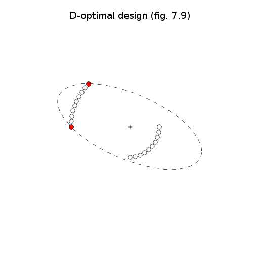
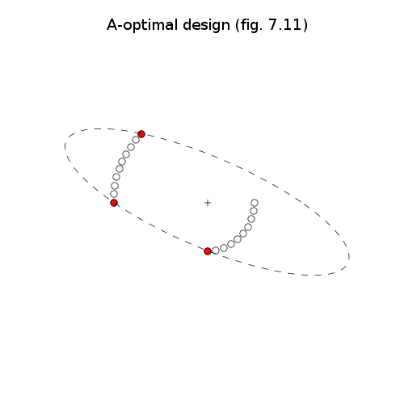
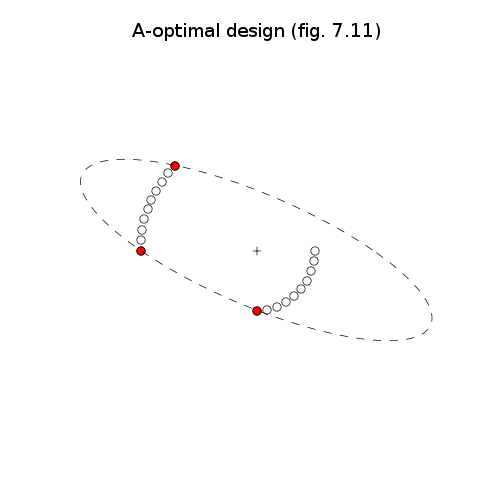

Experiment design (fig. 7.9-7.11)¶

 

# Figures 7.9-12, pages 389-390.
# Experiment design.
from math import pi, log, sqrt
from cvxopt import blas, lapack, solvers
from cvxopt import matrix, spmatrix, spdiag, mul, cos, sin
solvers.options['show_progress'] = False
try: import pylab
except ImportError: pylab_installed = False
else: pylab_installed = True
V = matrix([-2.1213, 2.1213,
-2.2981, 1.9284,
-2.4575, 1.7207,
-2.5981, 1.5000,
-2.7189, 1.2679,
-2.8191, 1.0261,
-2.8978, 0.7765,
-2.9544, 0.5209,
-2.9886, 0.2615,
-3.0000, 0.0000,
1.5000, 0.0000,
1.4772, -0.2605,
1.4095, -0.5130,
1.2990, -0.7500,
1.1491, -0.9642,
0.9642, -1.1491,
0.7500, -1.2990,
0.5130, -1.4095,
0.2605, -1.4772,
0.0000, -1.5000 ], (2,20))
n = V.size[1]
G = spmatrix(-1.0, range(n), range(n))
h = matrix(0.0, (n,1))
A = matrix(1.0, (1,n))
b = matrix(1.0)
# D-design
#
# minimize f(x) = -log det V*diag(x)*V'
# subject to x >= 0
# sum(x) = 1
#
# The gradient and Hessian of f are
#
# gradf = -diag(V' * X^-1 * V)
# H = (V' * X^-1 * V)**2.
#
# where X = V * diag(x) * V'.
def F(x=None, z=None):
if x is None: return 0, matrix(1.0, (n,1))
X = V * spdiag(x) * V.T
L = +X
try: lapack.potrf(L)
except ArithmeticError: return None
f = - 2.0 * (log(L[0,0]) + log(L[1,1]))
W = +V
blas.trsm(L, W)
gradf = matrix(-1.0, (1,2)) * W**2
if z is None: return f, gradf
H = matrix(0.0, (n,n))
blas.syrk(W, H, trans='T')
return f, gradf, z[0] * H**2
xd = solvers.cp(F, G, h, A = A, b = b)['x']
if pylab_installed:
pylab.figure(1, facecolor='w', figsize=(6,6))
pylab.plot(V[0,:], V[1,:],'ow', [0], [0], 'k+')
I = [ k for k in range(n) if xd[k] > 1e-5 ]
pylab.plot(V[0,I], V[1,I],'or')
# Enclosing ellipse is {x | x' * (V*diag(xe)*V')^-1 * x = sqrt(2)}
nopts = 1000
angles = matrix( [ a*2.0*pi/nopts for a in range(nopts) ], (1,nopts) )
circle = matrix(0.0, (2,nopts))
circle[0,:], circle[1,:] = cos(angles), sin(angles)
W = V * spdiag(xd) * V.T
lapack.potrf(W)
ellipse = sqrt(2.0) * circle
blas.trmm(W, ellipse)
if pylab_installed:
pylab.plot(ellipse[0,:].T, ellipse[1,:].T, 'k--')
pylab.axis([-5, 5, -5, 5])
pylab.title('D-optimal design (fig. 7.9)')
pylab.axis('off')
# E-design.
#
# maximize w
# subject to w*I <= V*diag(x)*V'
# x >= 0
# sum(x) = 1
novars = n+1
c = matrix(0.0, (novars,1))
c[-1] = -1.0
Gs = [matrix(0.0, (4,novars))]
for k in range(n): Gs[0][:,k] = -(V[:,k]*V[:,k].T)[:]
Gs[0][[0,3],-1] = 1.0
hs = [matrix(0.0, (2,2))]
Ge = matrix(0.0, (n, novars))
Ge[:,:n] = G
Ae = matrix(n*[1.0] + [0.0], (1,novars))
sol = solvers.sdp(c, Ge, h, Gs, hs, Ae, b)
xe = sol['x'][:n]
Z = sol['zs'][0]
mu = sol['y'][0]
if pylab_installed:
pylab.figure(2, facecolor='w', figsize=(6,6))
pylab.plot(V[0,:], V[1,:],'ow', [0], [0], 'k+')
I = [ k for k in range(n) if xe[k] > 1e-5 ]
pylab.plot(V[0,I], V[1,I],'or')
# Enclosing ellipse follows from the solution of the dual problem:
#
# minimize mu
# subject to diag(V'*Z*V) <= mu*1
# Z >= 0
lapack.potrf(Z)
ellipse = sqrt(mu) * circle
blas.trsm(Z, ellipse, transA='T')
if pylab_installed:
pylab.plot(ellipse[0,:].T, ellipse[1,:].T, 'k--')
pylab.axis([-5, 5, -5, 5])
pylab.title('E-optimal design (fig. 7.10)')
pylab.axis('off')
# A-design.
#
# minimize tr (V*diag(x)*V')^{-1}
# subject to x >= 0
# sum(x) = 1
#
# minimize tr Y
# subject to [ V*diag(x)*V', I ]
# [ I, Y ] >= 0
# x >= 0
# sum(x) = 1
novars = 3 + n
c = matrix(0.0, (novars,1))
c[[-3, -1]] = 1.0
Gs = [matrix(0.0, (16, novars))]
for k in range(n):
Gk = matrix(0.0, (4,4))
Gk[:2,:2] = -V[:,k] * V[:,k].T
Gs[0][:,k] = Gk[:]
Gs[0][10,-3] = -1.0
Gs[0][11,-2] = -1.0
Gs[0][15,-1] = -1.0
hs = [matrix(0.0, (4,4))]
hs[0][2,0] = 1.0
hs[0][3,1] = 1.0
Ga = matrix(0.0, (n, novars))
Ga[:,:n] = G
Aa = matrix(n*[1.0] + 3*[0.0], (1,novars))
sol = solvers.sdp(c, Ga, h, Gs, hs, Aa, b)
xa = sol['x'][:n]
Z = sol['zs'][0][:2,:2]
mu = sol['y'][0]
if pylab_installed:
pylab.figure(3, facecolor='w', figsize = (6,6))
pylab.plot(V[0,:], V[1,:],'ow', [0], [0], 'k+')
I = [ k for k in range(n) if xa[k] > 1e-5 ]
pylab.plot(V[0,I], V[1,I],'or')
# Enclosing ellipse follows from the solution of the dual problem:
#
# maximize -mu - 2 * tr Z12
# subject to diag(V'*Z11*V) <= mu*1
# [ Z11, Z12 ]
# [ Z21, I ] >= 0
lapack.potrf(Z)
ellipse = sqrt(mu) * circle
blas.trsm(Z, ellipse, transA='T')
if pylab_installed:
pylab.plot(ellipse[0,:].T, ellipse[1,:].T, 'k--')
pylab.axis([-5, 5, -5, 5])
pylab.title('A-optimal design (fig. 7.11)')
pylab.axis('off')
pylab.show()